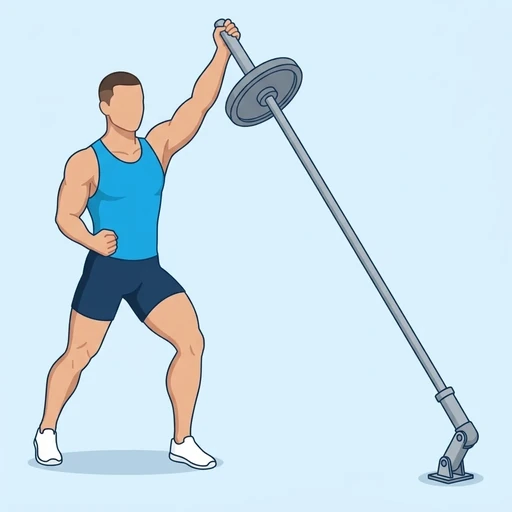

Landmine Single-Arm Overhead Hold
A one-arm isometric hold at the top of the landmine press: you press the end of the barbell overhead and stay locked out. The shoulder, the chest and the serratus keep the bar steady while the trunk resists the sideways pull of the angled bar.
Shoulders · Barbell · Intermediate

Muscles worked by the Landmine Single-Arm Overhead Hold
Primary
Secondary
Also called: front deltoid, anterior delt, front delt, anterior deltoid.
Equipment
Also called: bar, olympic barbell, straight bar, olympic bar, power bar.
How to do the Landmine Single-Arm Overhead Hold
- Set one end of a barbell in a landmine post or in a corner and stand facing the free end in a staggered stance, feet about shoulder-width apart.
- Hold the end of the bar with one hand at the shoulder and keep your other hand on your hip.
- Press the bar up and forward until your arm is straight and your hand is above and slightly in front of your shoulder.
- Lock out your elbow and push your shoulder blade around your ribs without shrugging.
- Hold the bar steady for the planned time, with your trunk braced so that you do not lean to the side.
- Lower the bar to your shoulder under control and switch arms.
Form tips
- Keep the ribs down and the glutes squeezed so that you do not arch your lower back as you hold.
- Push the shoulder away from your ear at the top; do not let it shrug up toward your neck.
- Use a lighter load than for the press; holding for time is harder than a single repetition.
At a glance
| Body part | Shoulders |
|---|---|
| Category | Strength |
| Force type | Static |
| Mechanic | Compound |
| Difficulty | Intermediate |
| Equipment | Barbell |
| Goals | Strength, Endurance |
| Tags | Shoulder focus, Shoulder stability, Push day |
| MET | 6.0 (metabolic equivalent, for calorie estimates) |
| Unilateral | Yes |
| Bodyweight | No |
| Dataset id | landmine-single-arm-overhead-hold |
Landmine Single-Arm Overhead Hold in German & Spanish
| German | Landmine-Überkopf-Halt einarmig |
|---|---|
| Spanish | Sostén Landmine a Un Brazo sobre la Cabeza |
Descriptions, instructions and tips ship in all three languages in the JSON.
Related exercises
Exercise data (JSON)
The record below is exactly what exercises.json ships for this exercise — names, descriptions, instructions and tips in English, German and Spanish.
{
"id": "landmine-single-arm-overhead-hold",
"name_en": "Landmine Single-Arm Overhead Hold",
"name_de": "Landmine-Überkopf-Halt einarmig",
"name_es": "Sostén Landmine a Un Brazo sobre la Cabeza",
"description_en": "A one-arm isometric hold at the top of the landmine press: you press the end of the barbell overhead and stay locked out. The shoulder, the chest and the serratus keep the bar steady while the trunk resists the sideways pull of the angled bar.",
"description_de": "Ein einarmiger isometrischer Halt am oberen Punkt des Landmine-Drückens: Du drückst das Ende der Langhantel über den Kopf und bleibst in der Streckung. Schulter, Brust und Serratus halten die Stange ruhig, während der Rumpf dem seitlichen Zug der schrägen Stange entgegenwirkt.",
"description_es": "Un aguante isométrico a un brazo en la parte alta del press landmine: empujas el extremo de la barra por encima de la cabeza y te mantienes en extensión completa. El hombro, el pecho y el serrato mantienen la barra estable mientras el tronco resiste el tirón lateral de la barra inclinada.",
"category": "strength",
"force_type": "static",
"mechanic": "compound",
"difficulty": "intermediate",
"equipment": "barbell",
"body_part": "shoulders",
"primary_muscles": [
"anterior_deltoid"
],
"secondary_muscles": [
"obliques",
"pectoralis_major",
"serratus_anterior",
"triceps_brachii"
],
"goals": [
"strength",
"endurance"
],
"tags": [
"shoulder_focus",
"shoulder_stability",
"push_day"
],
"is_unilateral": true,
"is_bodyweight": false,
"instructions_en": [
"Set one end of a barbell in a landmine post or in a corner and stand facing the free end in a staggered stance, feet about shoulder-width apart.",
"Hold the end of the bar with one hand at the shoulder and keep your other hand on your hip.",
"Press the bar up and forward until your arm is straight and your hand is above and slightly in front of your shoulder.",
"Lock out your elbow and push your shoulder blade around your ribs without shrugging.",
"Hold the bar steady for the planned time, with your trunk braced so that you do not lean to the side.",
"Lower the bar to your shoulder under control and switch arms."
],
"instructions_de": [
"Stecke ein Ende einer Langhantel in einen Landmine-Halter oder in eine Ecke und stelle dich in Schrittstellung mit etwa schulterbreit stehenden Füßen vor das freie Ende.",
"Halte das Ende der Stange mit einer Hand an der Schulter und die andere Hand an der Hüfte.",
"Drücke die Stange nach oben und vorn, bis dein Arm gestreckt ist und deine Hand über und leicht vor der Schulter ist.",
"Strecke den Ellbogen ganz durch und schiebe das Schulterblatt um die Rippen herum, ohne die Schulter hochzuziehen.",
"Halte die Stange für die geplante Zeit ruhig, den Rumpf angespannt, damit du dich nicht zur Seite lehnst.",
"Senke die Stange kontrolliert zur Schulter ab und wechsle den Arm."
],
"instructions_es": [
"Coloca un extremo de la barra en un soporte landmine o en una esquina y ponte de frente al extremo libre en postura escalonada, con los pies separados aproximadamente al ancho de los hombros.",
"Sujeta el extremo de la barra con una mano a la altura del hombro y apoya la otra mano en la cadera.",
"Empuja la barra hacia arriba y hacia delante hasta que el brazo quede estirado y la mano esté encima y ligeramente por delante del hombro.",
"Bloquea el codo y lleva la escápula alrededor de las costillas sin encoger los hombros.",
"Mantén la barra estable durante el tiempo previsto, con el tronco contraído para no inclinarte hacia un lado.",
"Baja la barra hasta el hombro de forma controlada y cambia de brazo."
],
"tips_en": [
"Keep the ribs down and the glutes squeezed so that you do not arch your lower back as you hold.",
"Push the shoulder away from your ear at the top; do not let it shrug up toward your neck.",
"Use a lighter load than for the press; holding for time is harder than a single repetition."
],
"tips_de": [
"Halte die Rippen unten und die Gesäßmuskeln angespannt, damit du den unteren Rücken im Halt nicht überstreckst.",
"Schiebe die Schulter oben vom Ohr weg; lass sie nicht zum Nacken hochziehen.",
"Nimm eine leichtere Last als beim Drücken; Halten auf Zeit ist schwerer als eine einzelne Wiederholung."
],
"tips_es": [
"Mantén las costillas abajo y los glúteos apretados para no arquear la zona lumbar mientras aguantas.",
"Aleja el hombro de la oreja arriba; no dejes que se encoja hacia el cuello.",
"Usa una carga más ligera que para el press; aguantar por tiempo es más difícil que una sola repetición."
],
"met": 6.0,
"images": {
"flat": {
"main": "images/flat/landmine-single-arm-overhead-hold-main.webp"
}
}
}Fetch just this exercise
const { exercises } = await fetch(
"https://exercise-dataset.com/exercises.json"
).then(r => r.json());
const ex = exercises.find(e => e.id === "landmine-single-arm-overhead-hold");Free for personal and commercial in-app use with attribution (“Exercise data by RepDB”) — see the license and ready-made attribution snippets. Redistributing the data as a dataset or API is not permitted.